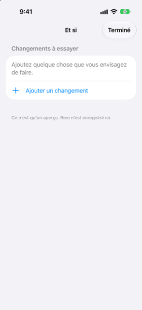

Guide › Planification
Et si
Essayez un achat, un prêt ou un paiement en retard avant de le faire.
Et si est l'endroit où vous essayez un changement avant de le faire : dépenser un montant à une date, en recevoir un, laisser un paiement de côté, ou prendre un plan d'échéances. Damla compare votre prévision avec et sans le changement, pour que vous puissiez voir ce qu'il ferait à votre point le plus bas et à votre disponible à dépenser avant de vous engager.

Quand l'utiliser
- Vous pensez à un gros achat exceptionnel et voulez savoir ce qu'il fait aux semaines autour.
- Vous envisagez un plan d'échéances et voulez voir l'échéance mensuelle dans votre prévision avant de l'accepter.
- Un revenu pourrait arriver en retard, ou vous pourriez sauter une facture, et vous voulez voir ce que cela vous coûte.
- De l'argent est attendu à une date qui n'est pas encore dans vos livres, et vous voulez qu'il soit compté.
Pas à pas
- Ouvrez la Prévision depuis le graphique Votre solde à venir sur Aujourd'hui, et touchez Et si en haut à droite.
- Touchez Ajouter un changement.
- Choisissez le type en haut : Dépenser, Recevoir, Passer ou Échéances.
- Pour Dépenser ou Recevoir : nommez-le sous Quoi, entrez le Montant, choisissez la Date, et choisissez le compte depuis lequel c'est Payé depuis, ou celui où ça va Vers.
- Pour Passer : choisissez sous Exclure quel paiement récurrent ou quel plan exclure — un revenu ou une facture, un plan d'échéances, ou un achat échelonné.
- Pour Échéances : entrez l'Échéance mensuelle, choisissez le nombre de mois (de 2 à 60), choisissez la date de la Première échéance, et choisissez le compte depuis lequel c'est Payé depuis.
- Touchez Ajouter. Le changement rejoint la liste sous Changements à essayer.
- Lisez le Résultat au-dessus : Point le plus bas et Disponible à dépenser, chacun affiché comme il était, avec une flèche vers ce qu'il devient avec vos changements.
- Vérifiez la ligne d'avertissement : si les changements feraient passer votre solde sous votre minimum, un avertissement rouge indique de combien et à quelle date. Sinon, une ligne verte indique que le solde reste au-dessus de votre minimum pendant l'année qui vient.
- Pour essayer une autre combinaison, balayez un changement pour le retirer. Touchez Terminé quand vous avez fini.
Un exemple chiffré
Un foyer inventé, le 9 novembre. Devise AED, solde minimum AED 1,000, regardant au moins 30 jours devant. Un compte bancaire et un salaire :
| Ce qui compte | Valeur |
|---|---|
| Compte du quotidien (banque) | AED 29,600 aujourd'hui |
| Internet, mensuel le 12 | AED 350 sortant |
| Loyer, mensuel le 16 | AED 8,000 sortant |
| Salaire, mensuel le 27 | AED 25,000 entrant |
Sans changements, Damla montre un point le plus bas de AED 21,250 le lun. 16 nov. et un disponible à dépenser de AED 20,250. La question à laquelle répond Et si : quel est le plus que vous pourriez payer en un seul paiement à une date donnée, en gardant quand même le minimum de AED 1,000 ?
| Date de paiement | Le plus que vous pourriez payer | Montant confortable |
|---|---|---|
| 10 nov., 13 nov. ou 19 nov. | AED 20,000 | AED 16,000 |
| 29 nov. (après le salaire) | AED 36,500 | AED 29,500 |
Comment le lire : le même paiement a une limite plus basse avant la paie et une plus haute une fois le salaire du 27 novembre arrivé. Ce qui compte, c'est le point le plus bas que les semaines après le paiement atteignent, pas le solde aujourd'hui. Les économies de ce foyer, AED 40,000, ne figurent dans aucun de ces chiffres, car ce compte est marqué hors prévision.
Bon à savoir
À voir aussi
Quelque chose n’est pas clair ou manque ? Écrivez à support@raveniq.ai en indiquant la page.